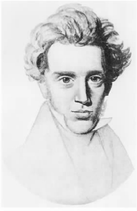
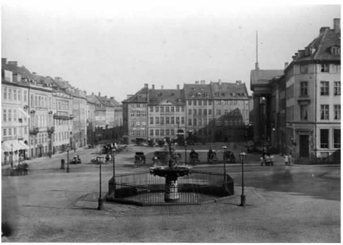
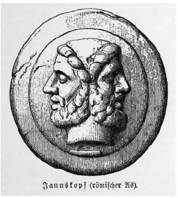
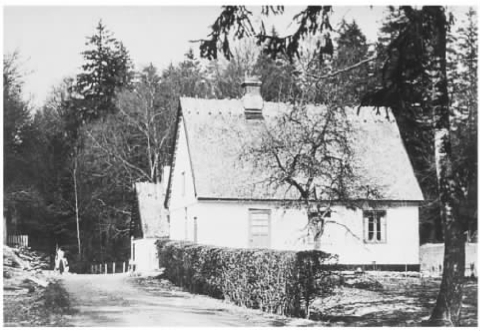

不止一次，克尔凯郭尔把天才比做逆风而上的雷雨。提出这个比喻的时候，不知道他是否想到了自己。不过，就他的学术生涯而言，这个比喻倒不失贴切。他像马克思和尼采一样，以勇于反叛19世纪的思想而闻名。他们在各自的著述中有意识地对抗自己那个时代的主流思潮和传统。直至去世之后，他们的重要观点才获得广泛的接受。
就克尔凯郭尔而言，人们对他的接受来得特别慢。他用丹麦语写作，与他同时代的丹麦人认为他是一个“多余的”人，至少他自己是这么看的。或许时人没有读他写的东西，或许他们读了，但误解了其中的内在含义。他于1855年去世，之后不久他的著作就有了德文译本，但开始并没有产生什么影响，只是在第一次世界大战期间和结束后，它们在中欧的影响才变得日益显著。他之所以获得至今仍无可争辩的世界声誉，是因为他的名字首先和存在主义联系在一起，这一哲学运动在20世纪30至40年代闻名于世。作为一位思想家，他可能显得晦涩、充满争议、难以分类。然而，他确实是一个不可忽视的人物。
对于死后的声名，克尔凯郭尔即使能够知道也不会感到奇怪。他自己曾自信地预言了这一点。他说，终有一天，人们将认真研究他的著作，赞赏书中独特而深邃的见解。至于这个预言是不是让他感到纯粹的满足，那是另外一回事。他提到未来世人对自己的重视，只是把这看做一个事件，并非为了孤芳自赏，反倒是一种讽刺的评论。他把将来那些会赞许他的人称为“教授”。换句话说，他在世时那些自鸣得意的学术机构的未来成员正是他痛批的对象。诚然，在这一点上，他的学术生涯愈接近尾声，他的观点便愈发尖锐，这和他对教会的憎恶愈来愈明显是一样的。话说回来，他对学术机构的敌视源自更早的时候他对某种东西产生的深深的怀疑，他认为这种东西对自己那个时代的学术氛围是有害的。这种东西便是被他称为“对客观性的错觉”的成见。一方面，这种成见用一层层的历史解说和伪科学推理来窒息主观经验的重要核心。另一方面，它喜欢从抽象的理论角度来探讨思想，根本不去考虑这些思想对于具体的世界观有何意义，对于活生生的人所承担的义务有何意义。克尔凯郭尔所有的著述都以这样或那样的方式证明了个体在面对这些倾向时需要强化自我的完整性，而他自己的个人生活可以说就例证了这一点。他的创作和他作为个体的存在相辅相成，不可分离，二者的关系忠实地记录在他浩繁的日记中。克尔凯郭尔二十一岁开始写日记，这些生动的文字有助于我们了解他奇异而复杂的个性中那迷宫般的隐秘之处。
索伦·奥比·克尔凯郭尔于1813年5月5日生于哥本哈根，是家里的第七个孩子。父亲米凯尔·佩德森·克尔凯郭尔是一个退休的针织品商人，年轻时是个农奴，后来获得自由人的身份。之后，通过自己的努力，也因为从一个叔叔那里继承了一笔价值不菲的遗产，他成了一个富人。在第一个妻子过早去世后，他娶了亡妻的女仆，生下克尔凯郭尔。母亲是个文盲，在儿子的成长过程中，她起的作用并不明显。相反，父亲对他产生了极大的影响。父亲自学成才，做生意十分精明，同时，他还是个虔诚的路德教会信徒，笃信义务和自律。克尔凯郭尔曾回忆，小时候，父亲要求他“绝对服从”自己。不过，令他印象最深的却不是这一点。父亲相信自己和他的家庭生活在神秘的诅咒之下，尽管物质生活丰裕，但他时时认为会遭到上天的惩罚。父亲的这些思想使克尔凯郭尔生活在阴郁和宗教的罪感之中，这对他日后的生活产生了很大的影响。这个做儿子的曾在其日记中回顾道，“从很早的时候开始，这一黑暗的背景便成了我生活的一部分”。他记得，“父亲使我的灵魂充满了恐惧，还有他那可怕的忧郁，以及我没有记下来的这种父子关系中所有的事情”（《日记》第273页）。

图1 克尔凯郭尔像，作者不明。
在任何时候，他从不低估困扰自己的残疾和困难。不过，还是有人说他从小被当成一个“疯子”来培养，这些尖锐的话让我们不难理解为何克尔凯郭尔对自己的成长方式颇有微辞。即便人们说这样的话是因为他的父亲，他对这个男人的感情仍是矛盾的：父亲活跃的——哪怕是怪异的——想象力令他着迷，父亲的才智和雄辩令他印象深刻。他在记忆中对父亲怀有深沉的认同感，这种认同感奇怪地糅合了敬爱与惧怕。
克尔凯郭尔儿时的一个伙伴称他在家里的生活是“严格与怪异”的神秘交融，而在私立学校的学习也没有让他获得多少解脱。他是一个男孩，可身体羸弱，行动笨拙。他认为自己的外表毫无魅力，对此他又极为敏感。于是他从不参加体育活动，经常成为别人欺负的对象。不过，在别的方面，他可毫不示弱。很快，他发现自己智力超群。后来他承认，当受到威胁时，这一点成了有效的自卫武器。他言辞锋利，容易伤人，尤其善于发现他人的弱点。据传，他擅长揶揄，喜欢挑衅，能把他的同班同学说得直掉眼泪。结果，他和周围的人变得疏远起来，成了一个孤独内向的人，令人忧惧，不讨人喜欢。他的同窗所描绘的这一形象可能不太吸引人，不过却预示了他成人后最直接、最引人注目的特征，即思想特立独行，讽刺入木三分。1830年，十七岁的克尔凯郭尔到哥本哈根大学求学。开始一切尚好。第一年，他选修的基础课程十分广泛，包括希腊语、拉丁语、历史、数学、物理和哲学，并以出色的成绩通过相关的全部考试。接着，他踵武自己的兄长彼得，开始攻读神学学位。彼得具有学术研究的天赋，但十分自负。当时，彼得已提前修完课程，正在德国攻读博士学位。克尔凯郭尔的学习进展则没有如此顺利。他对攻读学位逐渐失去兴趣，到1835年，他写信给一位朋友，说上课对他来说味同嚼蜡，他“更喜欢一种自由的、也许……多少不太确定的学习，不喜欢客饭，因为客饭事先就让人知道一周的每一天有哪些客人，要准备什么饭菜”（《日记》第9页）。如此描述自己对学习的态度，实际上反映了他当时追求的生活方式，这种方式似乎是在有意反抗家庭让他接受的严肃理想和严苛戒律。他经常大手大脚地花钱买衣服穿、买酒喝，欠债后，让父亲代为偿还。他还常常接二连三地参加各种宴会，光顾咖啡馆和餐馆，经常去戏院和歌剧院，用他自己的话说，当时“穿着时髦，鼻子上架着眼镜，嘴里叼着香烟”。

图2 哥本哈根新广场，1865年。克尔凯郭尔生于此城。
克尔凯郭尔曾说自己是个双面人——“一面开颜，一面啜泣”（《日记》第47页）。尽管从表面上看，他非常享受自己那迟迟不能毕业的读书生活，但从这一时期的日记看，他非常不满自己这种空虚的存在状态，不满自己无法找到生活的中心或重心。一方面，他悲叹追求感官享受是徒劳的，清醒后只会留下厌倦和压抑；另一方面，他对自己当时所学的东西很不耐烦，认为那只是单纯地、刻板地追求知识和知性——“如果真理就站在面前，客观、清晰，根本不在乎我是否了解它，如此，了解又有何用？”（《日记》第15页）相反，他谈到自己需要发现一种“思想”或“生活观”，让他可以毫无保留地审视自我，并且借此来羡慕地仰望那些“伟大的人物”。对这些大人物来说，只要是自己眼中最有价值的事业，他们都会不顾一切、全心全意地投身其中。事实上，有一段时间他甚至觉得，去做一个一心一意的犯罪大师也是挺吸引人的。没错，他读书勤奋，抛弃了神学，转而学习哲学和文学，后两者为他提供了一块训练想象力和批判力的沃土。不过，这样一来，他感到自己基本上成了一个生活的旁观者，而不是一个行动者，永远在重新体验他人的经验和思想，却无法拥有任何属于自己的东西。因此，他认为自己生活在“虚拟语气”而不是“陈述语气”中，绝望地把自己的处境比做一颗不会移动的棋子。

图3 克尔凯郭尔以两面神杰纳斯自况，自称“一面开颜，一面啜泣”。
表面上看，克尔凯郭尔的这段生活充满欢乐、无忧无虑，但可以说，其背后是深深的无力和困惑之感。这种感觉一直持续到1838年。那一年，父亲突然去世。父子俩的关系向来既分外亲密又令人不安，可以想见，这一事件对克尔凯郭尔的情感产生了巨大的影响。相对而言，比较难以预料的是，这种影响以何种形式出现。克尔凯郭尔一家有七个孩子，只有两个活了下来。克尔凯郭尔大概以为，父亲注定要比自己和兄长活得更久，可事实并非如此。于是，他认为父亲的死是为他作出了某种“牺牲”，为的是“可能的话，我会变成某种东西”（《日记》第62页）。所以，尽管继承的遗产可以让他过上舒适的生活，不必为生计去求学，但他还是认为自己现在有义务去完成大学课程，以了却父亲的夙愿。他马上认真备考，于是在两年内，思想和前途发生了极大的变化。父亲去世后不久，他出版了自己的第一本书，《来自一个生者的手稿》。此书研究的是汉斯·安德森作为一个小说家的局限性。1840年7月，他终于获得了神学学士学位。同年9月，他宣布与特克尔·奥尔森的女儿订婚。特克尔·奥尔森是一位高官，出身名门。第二年11月，克尔凯郭尔在一所神学院开始进修牧师的训练课程，同时动笔撰写硕士学位论文。总而言之，作为一个业余艺术爱好者和一个花花公子的生活被远远抛在身后，他似乎打算成为一个负责任的丈夫，为谋到一种正式的职业身份而学习。
然而，这一切仍然不过是骗人的假相。克尔凯郭尔无法忘记自己和雷吉娜·奥尔森的婚约，这对他日后的发展——无论是作为一个普通人，还是作为作家——无疑将起到相当重要的作用。对于这一段记忆，他在日记中无数次提到，在不同阶段的创作中也经常有所暗示。不过从他后来的陈述来看，他在心中一开始就挣扎在结婚的念头和虚幻的氛围——至少他是这样看的——二者间的矛盾之中。这一矛盾笼罩了两人当时的关系。表面上看，外人的印象是他在努力做着自己的身份要求他做的一切，生活很正常。其实，他觉得，从求婚得到接受的那一天起，自己就后悔了。随着时间的流逝，怀疑和焦虑变得越来越强烈，不过，他一直小心隐藏这样的情绪。将近一年后，他退回婚戒，让雷吉娜忘了那个送她婚戒的男人，因为他无法让一个姑娘幸福，请她原谅。在此后的一段时间里，雷吉娜努力挽回，而他决定摆出一副冷漠的样子来加以拒绝。后来他说，这样做，是因为当时相信，只有这样才能“把她推出去，嫁为他人妇”。
无论外界如何看待他的退婚行为——当时他没有采取任何办法为自己挽回一点名声，克尔凯郭尔后来声称，退婚是他自讨苦吃，内心饱受煎熬。这一点是毋庸置疑的。提到当时的情况，他认为自己不得不作出这个痛苦的决定，而这一决定使他在情感上受到极大影响。他相信自己的决定是对的，可这却丝毫未能平息苦闷。不过必须承认，对于这一决定的背后原因的实质，他有些躲躲闪闪。有时，他感到是“忧郁”导致他的无能为力；有时，他又觉得自己的个性与世不容；还有些时候，他把自己称为一个“与众不同的”人，这使他最终无法与他人建立婚姻关系，因为这对他要求太高。不过，无论此事真相如何，毫无疑问，与雷吉娜·奥尔森分手代表了他生活中一个关键的转折点。虽然献身于基督教这一点已经不可改变，但是，他不愿再认真考虑以兄长为榜样，成为一名神职人员。相反，他成了一个独身的隐居者，利用父亲的遗产带来的丰盈收入，全心全意地投入到写作中。“写作，”他此后曾说道，“就是我的生活。”

图4 克尔凯郭尔的居所阿赫特韦格豪斯（Achtwegehaus）。
的确，他的写作已在进行当中。也许由此可以看出克尔凯郭尔矛盾的心态。在当时，不幸的婚约所牵涉到的感情问题丝毫没有影响他的工作。相反，如果说有什么影响的话，那就是感情的波折起到了相反的效果，大大激发了他的创作激情：第一个成果就是硕士学位论文——《论讽刺概念：以苏格拉底为例》，他不到一年就完成了这篇论文。论文复杂晦涩，评审们为此感到苦恼，其中一个抱怨这篇论文冗长啰唆、矫揉造作。克尔凯郭尔在论文中运用了独特的研究方法，这可能也使他们感到了惊讶。这篇论文预示——至少是间接地暗示了他日后诸多作品的特点：在某些方面对广受尊敬的黑格尔哲学进行批判。同时，他间接地但随时地利用自己个人的经历来刻画自己作为一个浪漫主义讽刺家的形象，认为自己是这个世界中的“陌生人和局外人”，和他人及自己永远存在着隔阂。尽管当时人们对这篇论文持有种种保留意见，它还是在系里获得了通过。
同年（1841）晚些时候，克尔凯郭尔离开哥本哈根去了柏林，目的是进修谢林开设的一门课程。谢林是一位德国哲学家，青年时和黑格尔过往甚密，后来却与他分道扬镳。现在他的观点与黑格尔的思想水火不相容，他也以此而闻名。开始，克尔凯郭尔对谢林颇有好感，赞同他的这一观点：黑格尔试图把具体现实这一领域等同于对一般概念或范畴的阐述，却没能把握本质和存在的关键区别。当谢林的讲授从否定的批判转到实证的思辨时，克尔凯郭尔却越来越生气，认为谢林思维混乱，自命不凡，认为他那一套形而上的学说“软弱无力”。无论如何，他至此已经完全投入到属于自己的“创业”活动之中。他于次年2月给自己的兄长写了一封信，称“谢林满口胡言乱语，令人无法容忍”。接着又说，他已经决定返回哥本哈根，完成“手头上的一本小书”（《日记》第104页）。这本书就是《非此即彼》。在此后的几年里，他接二连三地写出一系列关于哲学、文学和心理学的著作，《非此即彼》是第一本。它绝不是一本“小书”，1843年初它出版了，是厚实的两卷本。八个月后，《重复》和《恐惧与颤栗》面世了，接下来是《哲学片断》和《焦虑的概念》（两本均出版于1844年6月）、《人生道路的各个阶段》（1845）和《最后的非科学附言》（1846）。这些著作都以不同的笔名出版，它们并没有使克尔凯郭尔这一时期的创作趋于枯竭：他同时还以真名发表了《十八训导书》。和那些以笔名发表的著作不同，这本书具有明显的宗教性质。不管以什么标准看，如此多产都是惊人的，不过，这一成就也使他付出了相当的代价。将近五年中，他“像教会文书一样在工作间里埋首耕耘，几乎一天也没有休息”，心神疲惫。在完成《附言》 [1] 后，他曾考虑放弃写作，到乡间过日子——这并不奇怪。然而，不管他有什么样的计划，还是被一件事打乱了，这件事在他的心灵中烙下了不可磨灭的印记。
1845年12月，一部文学论文集出版，其中有一篇文章讨论克尔凯郭尔的《人生道路的各个阶段》，作者是P.L.默勒。在谈到克尔凯郭尔对待雷吉娜·奥尔森这件事上，文章言语苛刻，含沙射影。克尔凯郭尔是在求学时代认识默勒的，默勒现在雄心勃勃，要成为一名大学教授。克尔凯郭尔看不起默勒的人品，他也知道默勒偷偷向《海盗》投稿。《海盗》是一份讽刺周刊，讥讽的是哥本哈根的名人，不过之前对克尔凯郭尔还算尊敬。克尔凯郭尔对这篇文章很生气，也知道它出自谁手，于是他写了一篇文章，尖锐地回击默勒，揭露他和这本声名不佳的杂志有秘密联系。同时，他也攻击《海盗》，将自己列为它的受害者之一，并暗示受到这样的刊物尊敬比受它攻击更丢脸。克尔凯郭尔的恶语反击的确大大损害了默勒的名声和前途，不过也为他自己招来了并不好受的还击。《海盗》的编辑接受挑战，图文并茂地嘲笑克尔凯郭尔，一周接着一周拿他示众，不管是他的外貌还是他的习惯，他们都不放过。这种公开的羞辱深深地刺痛了他的心，下面这段日记清楚地说明了这一点：
（《日记》第161页）
他继续抱怨：甚至连那些他喜欢与之为伍的人和他在一起时也感到尴尬或气恼。他们担心自己受到连累，成为讽刺的对象——“到最后，唯一可做的事情就是撤退，只和那些我讨厌的人交往，因为和其他人交往真令人羞耻。”
他希望得到熟人的支持，却遭到他们抛弃。这一说法可能有道理，也可能不太准确，不过，它肯定说明了在人生的这一阶段他所经受的偏执而孤独的体验。然而，随着时间的流逝，克尔凯郭尔开始更为积极地看待自己的处境以及导致这一处境产生的行为。他不仅勇于反抗某一爱管闲事的杂志的威胁，而且准备独自承担这种反抗的后果。并且，他通过自己的亲身经历，了解了人们怯懦的从众心理，对个人的正直缺乏尊敬。在有了这些经历之后，他终于放弃原先退隐田园的想法。他相信，目前“文学的、社会的和政治的形势”要求一个“超凡脱俗者”准备以真理的名义来说话。这里的真理是基督教的真理。他认为自己的才学和品性适合担当这一任务。无疑，他怀着神授的使命感，决意一直忠实于自己的创作事业。他认为自己有必要再次“驶入广阔的大海，无论是否受神之恩惠，都完全听命于上帝”（《日记》第192页）。
因此，尽管1846年的事件带来的创伤不断出现在记忆中，克尔凯郭尔仍然继续从前那种表面平静但内心热烈的生活轨迹。这种生活方式当然不缺少物质方面的支持。为了让自己有舒宜的工作环境，他大笔地支取继承来的遗产：定期让人把精致的饭菜送到他装饰高雅的公寓里，开怀畅饮美酒；夏天，他继而雇车游玩乡野。他并不掩饰自己的奢华，不过他坚持认为，要写出好东西，就得过好生活。然而，他要告诉世人的东西却令人很不舒服。他相信，当今的社会千疮百孔，充满虚伪、自满和自欺，这在宗教思想和礼仪中表现得尤为突出。所以他要令世人震惊，要他们因此而意识到自己的处境。《文学评论》（1846）、《不同精神的训导书》和《爱之作》（1847）以及《基督教论辩》（1848）这样的作品为他之后的两部主要作品作了铺垫。这两部作品和前面的这几部不一样，是用笔名发表的。用笔名是为了让读者正确理解其中所涉及的思想：《致死的疾病》（1849）深入研究精神的病态，在某些方面，这些研究和他早先的《焦虑的概念》是一脉相承的；在《基督教训练》（1850）中有一个鲜明的对比，即基督教信仰要求信仰者所拥有的观念和一种浅薄的或世俗的观念之间的对比，后者以基督教信仰的名义进行广泛的散布。这些作品是克尔凯郭尔迈出的重要一步，它们的交相辉印标志着他学术生涯的顶峰。
相对而言，在19世纪50年代早期，他实际上发表的著作并不多，然而这证明了他此时不过是要喘一口气，以便接下来以更为公开、更具颠覆性的方式对抗流行思潮。这些著作首先将矛头对准受人尊敬的教会权贵的名声。1854年，丹麦大主教明斯特去世，其继任者为汉斯·马滕森。马滕森是一位神学家，在大学里曾是克尔凯郭尔的导师之一。他在明斯特的葬礼上致悼词，称其为“真理的见证人”。他从前的这位学生认为这一说法尤为不妥。虽然明斯特和克尔凯郭尔的父亲有私交，克尔凯郭尔却越来越相信，此人典型地表现了在对待基督教方面自满自得、自律不严的态度。克尔凯郭尔在自己的著作中批判的正是这种态度。因此，在同年12月，他著文对马滕森的话表示了极大的轻蔑，接着又扩而展之，将攻击的目标指向官方的基督教——“基督教世界”——所代表的一切，讽刺和挖苦它的支持者和代表者内心所怀有的动机。他的中心论点是，教会基本上已经成了一个世俗机构，和国家关系密切，为官僚所控制；这些人首要关心的是攫取更多的物质利益，他们用虚伪的空谈来掩盖教会活动的真正目的。如果要发现这些人所用术语的真正含义，就必须从反面来读解它们。例如，宣扬《圣经》关于贫穷的观点，应该被理解为追求有利可图之事；对世俗利益的谴责便是对这些利益的攫取。这就好像人们常用“再见”这个词来表示他已经来过——“要是一个人听到‘再见’这个词，怎么会想到一个人正在赶往这里呢？”由此，克尔凯郭尔暗示，教会声称为公众服务，赢得无比的信任，却又对他们撒下弥天大谎。最后，他号召自己的读者彻底退出“官方的崇拜”，如此，他们才不会同流合污，欺骗上帝。他的这些观点首先通过公共传媒发表，后来印在他自费出版的名为《瞬间》的大字报上。
克尔凯郭尔孤身对抗教会机构及权威人士，他极为雄辩，挖苦入木三分。这种激情令近来一些评论者想起他的同时代人卡尔·马克思，马克思以同样的激情试图揭露19世纪资本主义社会虚伪的意识形态。毫无疑问，克尔凯郭尔的观点在某些地方引发了愤怒，甚至招来恐吓。人们表示抗议，要求采取行动，以对付这一在他们看来具有破坏性的骚动。然而出人意料的是，他向公众论战这一领域发动的凶猛进攻历时短暂。1855年10月初，他在街上瘫倒，几星期后死于医院。葬礼在哥本哈根大教堂举行，他的兄长向大批的会众发表讲话，既赞赏克尔凯郭尔的成就，也为他在去世前最后一段时间里所表现出来的混乱的判断而感到遗憾。如果克尔凯郭尔事先得知这些，人们的这些举动恐怕又要遭到讽刺。